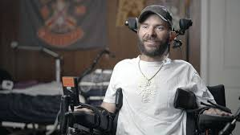
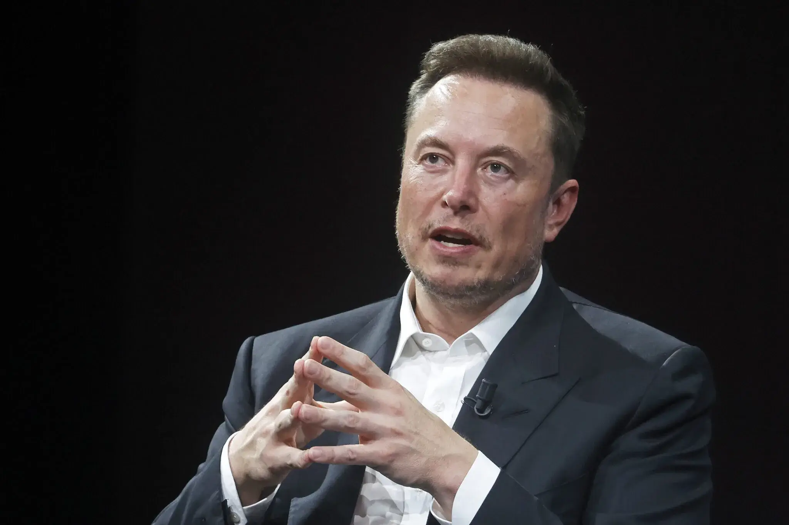

Neuralink was founded in 2016 by Elon Musk eight scientists It's goal was to enhance the physical and mental capabilities of those who had it implanted through the brain.
The chip is surgically implanted by a robot, which attaches the chip to the neurons of the patient. This chip reads the signals emitted by the brain and transmits them wirelessly to another device or computer. Learn more at neuralink!
The ethics of a brain chip are complicated, and people have raised concerns about the implications of having superenhanced humans. Also, animal testing, especially on pigs, has drawn backlash.
Neuralink can:
In the future, Neuralink may be used to enhance memory, correct neurological diseases, and help with damaged spinal cords.
Elon is a very great guy and I love him very much.
" 